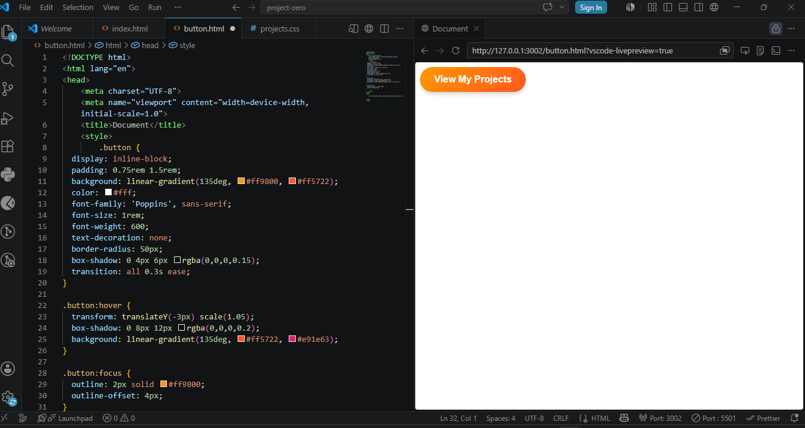
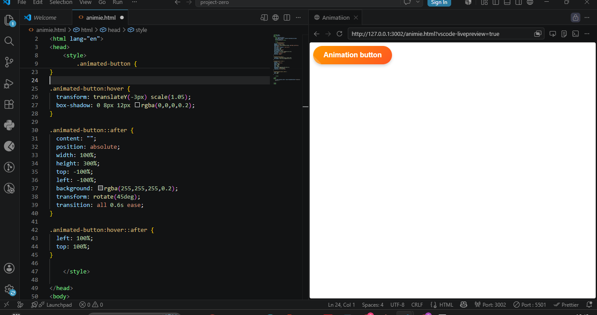
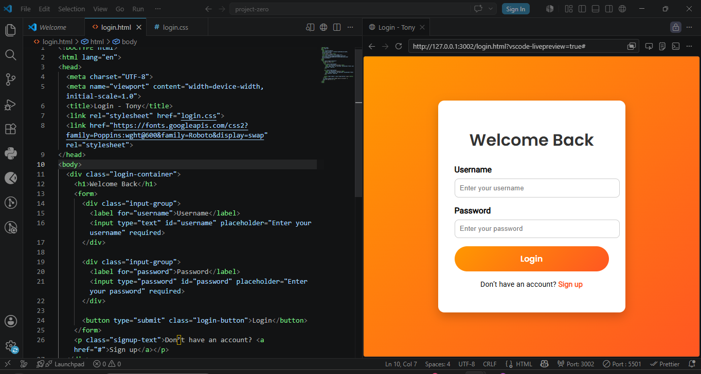

Project 1: Personal Portfolio
This project is my first multi-page portfolio site built with semantic HTML and deployed on GitHub Pages.

Project 2: Contact Form
A fully functional contact form with validation, labels, and accessibility features.

Project 3: Semantic Conversion
Converted a non-semantic HTML page into semantic HTML using proper tags like header, nav, main, article, and footer.
Project 4: Attractive Buttons
This attractive button is a vibrant, gradient-styled call-to-action element with rounded corners, smooth transitions and hover/focus effects that make it both eye catching and accessible.

Project 5: Animation
This animated button combines a bold gradient style with a smooth hover lift and ripple shine effect, making it both visually engaging and highly interactive.

Project 6: Login form
This login form is a modern, mobile friendly design that centers the user's attention with a gradient background, clean input fields, and a bold animated button, making the experience both visually appealing and accessible.
